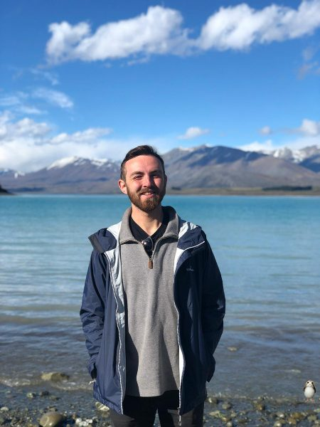

Ben Jenkins
Ben was a member of the group. He then joined Ross Waller's group at the University of Cambridge, and now works between Cambridge and the Marine Biological Association in Plymouth.

My research theme is endosymbiosis – more specifically, I want to understand the RNA and protein factors that influence the fate of an endosymbiotic interaction. I work with the single-celled endosymbiotic ciliate, Paramecium bursaria, and use a combination of functional genomics, RNA-interference mediated gene knock-down, RNA sequencing, and proteomics to answer these questions. At present, I am developing a protocol of high-throughput RNAi knock-down that will allow us to identify the host genes that maintain the interaction between P. bursaria and its algal endosymbiont.
Selected Publications
- Emergent RNA-RNA interactions can promote stability in a facultative phototrophic endosymbiosis. Jenkins et al., 2021, PNAS. https://doi.org/10.1073/pnas.2108874118
- Symbiosis: Wolf Lichens Harbour a Choir of Fungi. Jenkins and Richards, 2019, Current Biology. https://doi.org/10.1016/j.cub.2018.12.034
Hobbies & Interests
I enjoy walking, cycling, or swimming, and can run when needed. Outside of these Herculean physical pursuits, you can find me with a beer or book in hand.